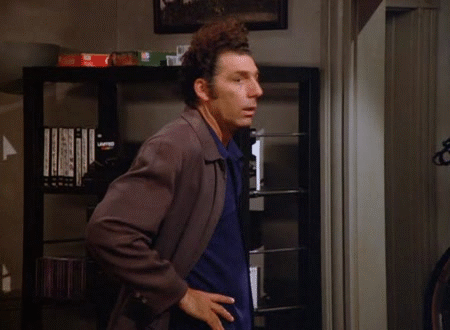

What inspires you?

.gif)

Inspiration and enthusiasm are hard to find. But more often, they are hard to have. 01100101 01110011 01110000 01100101 01100011 01101001 01100001 01101100 01101100 01111001 00100000 01110111 01101000 01100101 01101110 00100000 01101001 01101110 00100000 01110100 01101000 01100101 00100000 01110100 01110010 01100101 01101110 01100011 01101000(especially when in the trench)
Why?
- to Settle is easy.
- to Fail is easy.
- to Reject is easy.
- to Give up is easy.
that is ok
"Don't compromise." - Steve Jobs
"No pressure, no diamonds." - Thomas Carlyle
"There is always a way, even if there isn't" - me
The traveling salesman.

"The ant." - Marco Dorigo 1993

bees do the same thing.... on three dimensions
Edison's subdivide of light.
"Edison's system has been worked out in detail, with a thoroughness and mastery of the subject that can extract nothing but eulogy from his bitterest opponents ... Many unkind things have been said of Mr. Edison and his promises; perhaps no one has been severer in this direction than myself. It is some gratification for me to be able to announce my belief that he has at last solved the problem he set himself to solve." - William Preece
Then there was the light emitting diode.

"Wash your hands" - Ignaz Semmelweis
Washing your hands is standard procedure -
HICPAC/SHEA/APIC/IDSA Hand Hygiene Task Force

![]()

Something is impossible if it has not been accomplished.
Accomplish it.
You are the source of your inspiration.
Find it.